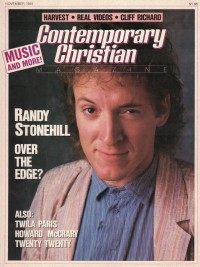

Randy StonehillOn the cover|  | November 1985
CCM | Media coverage:- Jan 1979 in HIS "God, Me, & My Guitar"
- Mar 1979 in CCM "Talent: Randy Stonehill Comes Up an Ace at the Exit/In", by Don Cusic
- Nov 1980 in Campus Life "Joyfully Crazed", by Rickley Christian
- Dec 1980 in CCM "In Concert: Larry Norman, Randy Stonehill", by Jon Robberson
- Oct 1981 in CCM "Life Between The Glory And The Flame", by Devlin Donaldson
- 1981 in New Christian Music "Randy Stonehill"
- Jul 1982 in Campus Life "Impressions: Randy Stonehill"
- Dec 1982 in CCM "Concert Review: Stonehill / Heard In St. Paul", by Quincy Smith-Newcomb
- Aug 1983 in CCM "Randy Stonehill"
- 1984 in Cornerstone "Interview: Interviews With Cornerstone '84 Artists"
- Sep 1984 in Christian Life "They Take Their Talent to College Campuses", by Karen Tornberg
- Nov 1984 in Campus Life "Celebrating Heartbeats", by Patrick Kampert
- Nov 1985 in CCM "Waking Up From The Longest Dream", by Davin Seay
- Jan 1987 in CCM "Out Where The Big Wind Blows", by Thom Granger
- Apr 1987 in CCM "In Concert: McCaskey Sr. High School, Lancaster, PA"
- Jan 1988 in CCM "Toys in the Band: Randy Stonehill"
- Fall 1988 in Harvest Rock Syndicate "Lookin' For A Bright Day", by Thom Granger
- Win 1988 in Harvest Rock Syndicate "Concert Review: The Keaggy / Stonehill Band, Webster Grove, MO", by Brian Quincy Newcomb
- Win 1989 in Harvest Rock Syndicate "The Comic Prince Gets Serious", by Dan MacIntosh
- Win 1989 in Harvest Rock Syndicate "Uncle Rand In Radioland", by Mark Eischer
- May 1990 in CCM "Musicianaries For Christ: Compassion International: Taking A Stand"
- 1990 in Cornerstone "Interview: Festival Interviews", by David Canfield
- Aug 1990 in CCM "Turning Twenty", by Chris Willman
- Aug 1990 in CCM "Words In The Wind: A Critical Discography", by Thom Granger
- Aug 1990 in CCM "Concert Review: LaDue Chapel, Greenville, IL", by Brian Quincy Newcomb
- Oct 1990 in CCM "In The News: Keaggy, Stonehill Concert Benefits Love & Action"
- Feb 1992 in CCM "Getting The Message: Satan", by Steve Rabey
- Mar 1992 in Syndicate "It's A Great Big Stonehill World", by Arsenio Orteza
- Apr 1992 in CCM "An Eternal Innocent Rocks Mongolia", by Roberta Croteau
- Apr 1992 in Religious Broadcasting "Waking The Church to World Needs", by Devlin Donaldson
- Nov 1992 in CCM "Christian Musician: Steel Strings and a Box of Wood"
- Mar 1993 in CCM "In Concert: Mark Heard Memorial Benefit Concert: Massey Auditorium, Belmont University, Nashville, TN", by Bruce A. Brown
- Jul 1993 in CCM
- Oct 1994 in CCM "Daring To Dream Again", by Bruce A. Brown
- May 1998 in CCM "Still in Paradise", by Jim Long
- Aug 2004 in CCM "List-O-Rama: 5 Christian Artists on the Big Screen", by Chris Well
- Nov 2004 in CCM "Hall of Fame: Randy Stonehill", by Michael Ciani
- Aug 2007 in Charisma "The Jesus People: Where Are They Now"
- Dec 2011 in CCM Digital "What's New: Randy Stonehill", by Andy Argyrakis
Albums & reviews:1971: Born Twice1976: Welcome to Paradise1980: The Sky is Falling1981: Between the Glory & the Flame1982: Equator1984: Celebrate This Heartbeat1985: Love Beyond Reason: The Video Album1985: Stonehill1985: Love Beyond Reason1986: The Wild Frontier1988: Can't Buy A Miracle1989: Return to Paradise1990: One Night In Twenty Years [video]1990: Until We Have Wings1991: Wonderama1993: Stories1994: Lazarus Heart1998: Thirst2002: Edge of the World2003: Decade2003: Welcome to Paradise [remastered]2006: Together Live! with Phil Keaggy2009: Mystery Highway with Phil Keaggy2009: Paradise Sky2011: Songs for Israel with Phil Keaggy, Bob Bennett, Buck Storm2011: Spirit Walk Award Summary (Nominations / Wins)Dove AwardsBooks about Randy Stonehill- "Randy Stonehill" in The Heart of Rock and Roll (Steve Rabey, 1986)
- "Randy Stonehill (a.k.a. Stonehill)" in The Encyclopedia of Contemporary Christian Music (Mark Allan Powell, 2002)
- "Randy Stonehill" in The Billboard Guide to Contemporary Christian Music (Barry Alfonso, 2002)
|